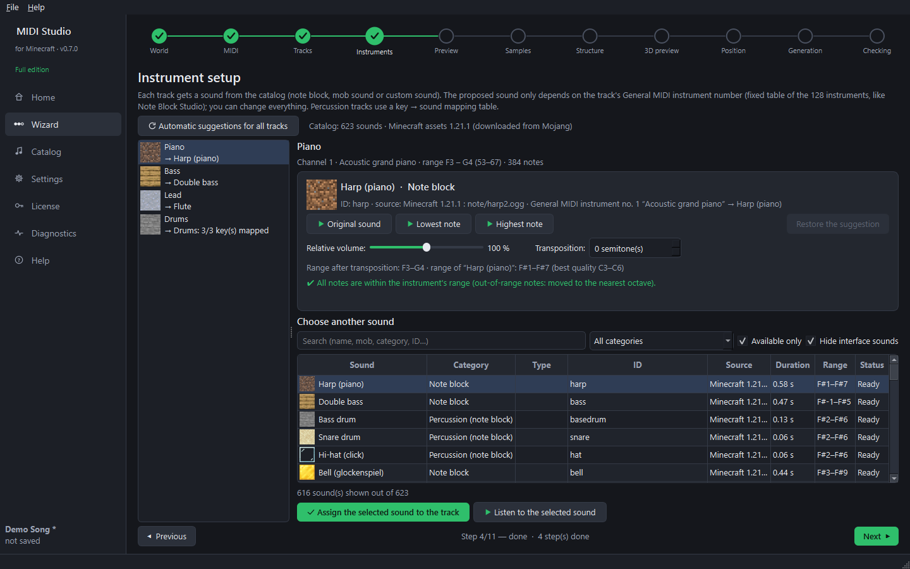

Step 6 — Instruments and drums (wizard step 4)
Goal: give each track a Minecraft sound.

- Each track automatically gets a sound from its General MIDI instrument number, with a fixed table of the 128 instruments, like Note Block Studio's MIDI import (see the table at the bottom of this guide): for example no. 1 piano → harp, no. 33 to 40 (basses) → double bass, no. 41 violin → flute. The track name and its notes do not matter. The reason is written under the sound.
- To change it: choose another sound in the catalog on the right (search box, categories, Listen), then click Assign the selected sound to the track.
- Adjust the Relative volume and the Transposition (in semitones) of the track.
- Lowest note / Highest note let you hear the extremes of the track with the chosen sound.
Drum tracks
A percussion track uses a key → sound table: each drum key (kick, snare, hi-hat…) is linked to a sound and a transposition, the way Note Block Studio creators do it. Keys without a sound can be ignored or played with the snare drum. Restore the default table undoes your changes.
Sounds available
- Note blocks (official Minecraft files: those of your installation, or downloaded from Mojang).
- Mob sounds of the selected Minecraft version, sorted by category (voice, hurt, movement…).
- Custom sounds placed in the Note Block Studio
Customfolder (full edition, if Note Block Studio is installed).
Free edition: 8 basic note block instruments (no pling, bell, chime, flute, guitar, xylophones or bit), and only the voices of 3 farm animals for mob sounds.
Table of the 128 General MIDI instruments
In the free edition, a sound reserved for the full edition is replaced by the closest free sound (often the harp).
| No. | General MIDI | Note block |
|---|---|---|
| 1 | Acoustic grand piano | Harp (piano) |
| 2 | Bright acoustic piano | Harp (piano) |
| 3 | Electric grand piano | Pling (electric piano) |
| 4 | Honky-tonk piano | Harp (piano) |
| 5 | Electric piano 1 | Pling (electric piano) |
| 6 | Electric piano 2 | Pling (electric piano) |
| 7 | Harpsichord | Harp (piano) |
| 8 | Clavinet | Pling (electric piano) |
| 9 | Celesta | Bell (glockenspiel) |
| 10 | Glockenspiel | Bell (glockenspiel) |
| 11 | Music box | Bell (glockenspiel) |
| 12 | Vibraphone | Vibraphone (iron xylophone) |
| 13 | Marimba | Xylophone |
| 14 | Xylophone | Xylophone |
| 15 | Tubular bells | Chime |
| 16 | Dulcimer | Harp (piano) |
| 17 | Drawbar organ | Bit (square wave) |
| 18 | Percussive organ | Bit (square wave) |
| 19 | Rock organ | Bit (square wave) |
| 20 | Church organ | Flute |
| 21 | Reed organ | Flute |
| 22 | Accordion | Flute |
| 23 | Harmonica | Flute |
| 24 | Tango accordion | Flute |
| 25 | Nylon guitar | Guitar |
| 26 | Steel guitar | Guitar |
| 27 | Jazz guitar | Guitar |
| 28 | Clean electric guitar | Guitar |
| 29 | Muted electric guitar | Guitar |
| 30 | Overdriven guitar | Guitar |
| 31 | Distortion guitar | Guitar |
| 32 | Guitar harmonics | Guitar |
| 33 | Acoustic bass | Double bass |
| 34 | Electric bass (finger) | Double bass |
| 35 | Electric bass (pick) | Double bass |
| 36 | Fretless bass | Double bass |
| 37 | Slap bass 1 | Double bass |
| 38 | Slap bass 2 | Double bass |
| 39 | Synth bass 1 | Double bass |
| 40 | Synth bass 2 | Double bass |
| 41 | Violin | Flute |
| 42 | Viola | Flute |
| 43 | Cello | Double bass |
| 44 | Contrabass | Double bass |
| 45 | Tremolo strings | Flute |
| 46 | Pizzicato strings | Harp (piano) |
| 47 | Orchestral harp | Harp (piano) |
| 48 | Timpani | Bass drum |
| 49 | String ensemble 1 | Harp (piano) |
| 50 | String ensemble 2 | Harp (piano) |
| 51 | Synth strings 1 | Pling (electric piano) |
| 52 | Synth strings 2 | Pling (electric piano) |
| 53 | Choir aahs | Flute |
| 54 | Voice oohs | Flute |
| 55 | Synth voice | Pling (electric piano) |
| 56 | Orchestra hit | Bit (square wave) |
| 57 | Trumpet | Bit (square wave) |
| 58 | Trombone | Didgeridoo |
| 59 | Tuba | Didgeridoo |
| 60 | Muted trumpet | Bit (square wave) |
| 61 | French horn | Flute |
| 62 | Brass section | Bit (square wave) |
| 63 | Synth brass 1 | Bit (square wave) |
| 64 | Synth brass 2 | Bit (square wave) |
| 65 | Soprano sax | Flute |
| 66 | Alto sax | Flute |
| 67 | Tenor sax | Flute |
| 68 | Baritone sax | Didgeridoo |
| 69 | Oboe | Flute |
| 70 | English horn | Flute |
| 71 | Bassoon | Didgeridoo |
| 72 | Clarinet | Flute |
| 73 | Piccolo | Flute |
| 74 | Flute | Flute |
| 75 | Recorder | Flute |
| 76 | Pan flute | Flute |
| 77 | Blown bottle | Flute |
| 78 | Shakuhachi | Flute |
| 79 | Whistle | Flute |
| 80 | Ocarina | Flute |
| 81 | Square lead | Bit (square wave) |
| 82 | Sawtooth lead | Bit (square wave) |
| 83 | Calliope lead | Flute |
| 84 | Chiff lead | Flute |
| 85 | Charang lead | Guitar |
| 86 | Voice lead | Pling (electric piano) |
| 87 | Fifths lead | Bit (square wave) |
| 88 | Bass + lead | Bit (square wave) |
| 89 | New age pad | Pling (electric piano) |
| 90 | Warm pad | Pling (electric piano) |
| 91 | Polysynth pad | Pling (electric piano) |
| 92 | Choir pad | Flute |
| 93 | Bowed pad | Pling (electric piano) |
| 94 | Metallic pad | Vibraphone (iron xylophone) |
| 95 | Halo pad | Pling (electric piano) |
| 96 | Sweep pad | Pling (electric piano) |
| 97 | Rain FX | Chime |
| 98 | Soundtrack FX | Pling (electric piano) |
| 99 | Crystal FX | Chime |
| 100 | Atmosphere FX | Pling (electric piano) |
| 101 | Brightness FX | Bell (glockenspiel) |
| 102 | Goblins FX | Pling (electric piano) |
| 103 | Echoes FX | Chime |
| 104 | Sci-fi FX | Bit (square wave) |
| 105 | Sitar | Banjo |
| 106 | Banjo | Banjo |
| 107 | Shamisen | Banjo |
| 108 | Koto | Harp (piano) |
| 109 | Kalimba | Vibraphone (iron xylophone) |
| 110 | Bagpipe | Didgeridoo |
| 111 | Fiddle | Flute |
| 112 | Shanai | Flute |
| 113 | Tinkle bell | Bell (glockenspiel) |
| 114 | Agogo | Cow bell |
| 115 | Steel drums | Vibraphone (iron xylophone) |
| 116 | Woodblock | Hi-hat (click) |
| 117 | Taiko drum | Bass drum |
| 118 | Melodic tom | Bass drum |
| 119 | Synth drum | Bass drum |
| 120 | Reverse cymbal | Snare drum |
| 121 | Guitar fret noise | Hi-hat (click) |
| 122 | Breath noise | Snare drum |
| 123 | Seashore | Snare drum |
| 124 | Bird tweet | Flute |
| 125 | Telephone ring | Bell (glockenspiel) |
| 126 | Helicopter | Snare drum |
| 127 | Applause | Snare drum |
| 128 | Gunshot | Snare drum |
Next guide: preview and samples.